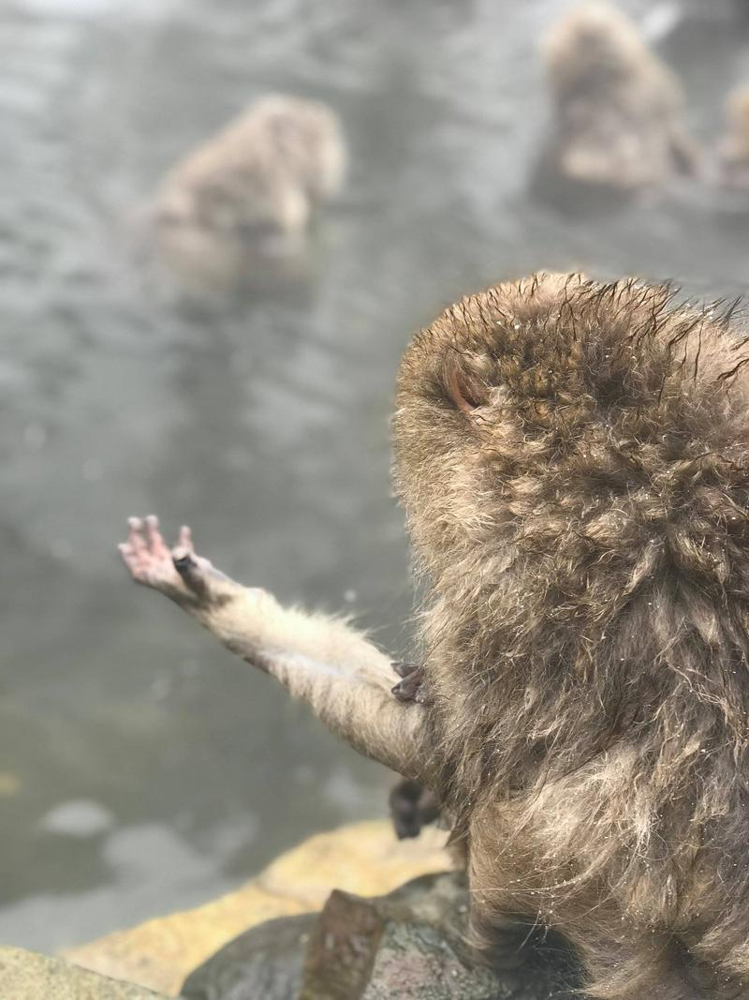
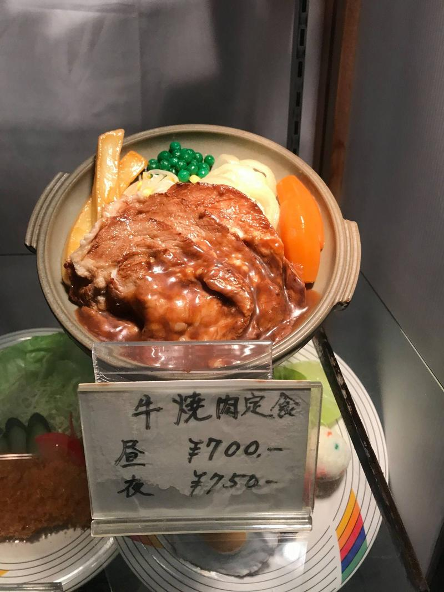
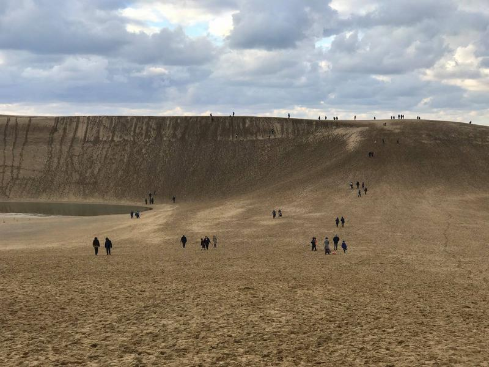
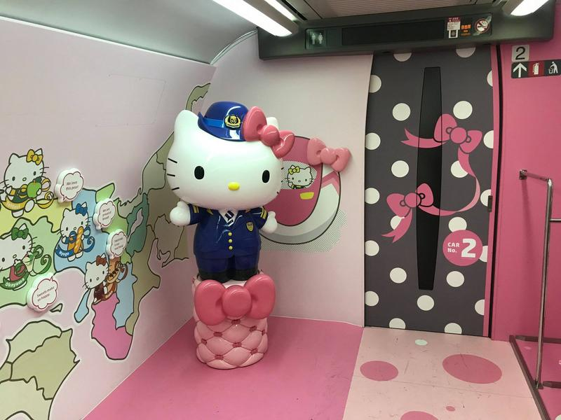

Zima v Japonsku a další bizarnosti jaro 2019
Jak vypadá taková klasická zima v Japonsku?
Někde uprostřed Japonských Alp…
… leží park opičí Jigokudani. Je to jediné místo na světě, kde opičky chodí do horských lázní a relaxují.
Některé opičky myslí na své zdraví a pro jistotu si změří před vstupem do vody svůj tep.

“Podívej, takhle opice vypadá jako ty”, říká mi drzá 睿.
Pak ale jedna z opic 睿 příšerně seřvala, když šla relaxovat do svého bazénku. Obě strany poté spolu přestaly na čas komunikovat. Zde jsem zachytil moment usmíření.
No pojďme raději do Tokia. Takhle nějak vypadá typická Japonka.
A zde můžeme vidět Japonce, který právě jede do práce! Oblíbené jsou zejména vozítka ve stylu Super Mario, které umožňují vyhnout se zácpám.
Asi se teď ptáte, jak je možné, že je Japonsko tak vyspělé? No, je to jednoduché. Jejích den má 25 hodin.
A taky už mají teleport.
V Japonsku nejezdí jen jeden Santa, jsou tady rovnou tři.
Že se blíží Vánoce, to je vidět na každém kroku.
Tohle je čtvrť Akihabara. Najdete tady hrozně moc věcí.
Třeba stánky s telefony Huawei. U několika jsme se vyfotili přes beauty kameru, ať má si má čínská vláda co prohlížet přes Vánoce.
A pak jsou tady komiksy. Jedna série může mít přes 100 dílů a stojí i kolem 20 tis. Kč. Život teenagera není v Japonsku levný.
Velké množství komiksů je o dvou mladých homosexuálech. Ty jsou nejoblíbenější. Čínská mravní hlídka je zakazuje, takže mladé Číňanky sem jezdí a pašují tyhle komiksy do Číny, kde narušují duševní vývoj svých kamarádek.
Nesmíme však zapomenout na muže. V Akihabaře mají svůj vlastní obchodní dům s panenkami.
Ani panenky nejsou zrovna levná záležitost, stojí často i přes 10 tis. Kč. S výběrem si Japonci proto dávají záležet.
Populární jsou tyhle kapsule. Jenže se vydávají po sériích třeba o 5 postavičkách, takže než člověk získá všech 5, potřebuje třeba 15 pokusů a protočí takhle 600 Kč.
Kdo tohle zná? V Akihabaři si může zavzpomínat na dětství.
Typická japonská reklama.
Ptáte se, jak poznáte sushi restauraci?
Téměř každá restaurace má před vchodem plastové modely. Restaurace si je koupí a pak podle nich ta jídla připravují.

Jak vypadá ta nejklasičtější sushi restaurace? Vyberete si sushi na dotykové obrazovce a jídlo k vám přijede na pásu.

Vyukové obrazovky pro turisty. Turisté se učí, jak se v Japonsku chovat.
Vyukové letáky pro Japonce. Japonci se učí, jak s turisty komunikovat.
Na jaře se jezdí do Japonska kvůli rozkvetlým sakurám, v zimě kvůli iluminacím.
Noční Šibuja.
Noční Odaiba.
Kjóto? Nene, tohle je v centru. Svatyně Hie. Zatímco v Kjótu je v Fushimi Inari-Taisha, nejnavštěvovanější památce v Japonsku, každý den desetitisíce lidí, tady budete úplně sami, i když je to v centru Tokia.
Jednou mě chtěla 睿 přesvědčit, že rezervaci k JR passu můžeme použít i jako normální lístek a vložit ho do turniketu. Tak jsme to zkusili a vyřadili jsme část železniční stanice z provozu.
Onsenové městečko Kusatsu.
Onsenové městečko Kusatsu.
Venku je sice pod nulou, ale to vám moc nevadí, protože nohy máte stále v teplé vodě.
Onsenové městečko Kusatsu.
Do města se dostanete snadno. Nedaleká železniční stanice má dobře zapamatovatelný název.
Mt Fuji a pagoda Chureito. Nejikoničtější místo v Japonsku.
Pod horou Fuji je tohle, Fuji-Q Highland. Poprvé v životě jsem byl na horské dráze, která drží několik rekordů a vzpamatovával jsem se z toho několik dní.
https://www.facebook.com/letimdojaponskacz/posts/1131622190342411
Kanazawa v zimě.
Uličky v Kjótu.
Uličky v Kjótu.
Duha v Kjótu.
Kjóto 1. ledna. Zatímco turistická místa jsou narvaná k prasknutí, o kousek dále jsou chrámy, kde široko daleko není ani noha.
Ukryté chrámy v Kjótu.

Moje bydlení v Ósace. Japonci zjistili, že mám rád jeden druh sušenek, a tak mi jich koupili rovnou celou krabici.
Co dělat, když potřebuješ postavit dálnici, ale na tom místě už stojí dům? No prostě postavíš dálnici skrze dům, ne? Ano, opravdu, v Japonsku najdete dálnici, která vede přes dům. Majitelé se prostě nemohli dohodnout, jak situaci s pozemkem vyřešit, a prostě postavili dálnici skrze barák.
Ta Ósaka je celá zvláštní. Na sloupech jsou třeba zadky zvířat.
Cože? Vy nechcete jet do Japonska, protože si chcete zajezdit někde jinde na velbloudech? No a víte, že v Japonsku to není žádný problém? Velbloudy tady taky mají.
I velké písečné duny.

A taky velké muzeum se sochami z písku.
The Sand Museum v Tottori.
I když některé sochy vypadají, hm, dost divně.
Čím tam dojet? No, co třeba Hello Kitty shinkansenem?
Hello Kitty shinkansen.

Paní Hello Kittyová vás ochotně vyfotí.
Hirošima. Nejemotivnější místo, na kterém jsem kdy byl.
Matsumoto. Nejhezčí japonský hrad, který jsem kdy viděl.
Svatyně v Uji. Nejhezčí japonská svatyně, kterou jsem kdy viděl.
Žába v Matsumoto. Nejhezčí japonská žába, kterou jsem kdy viděl.

Chrámy v Nikko.
Chrámy v Nikko.
Kdo zná tyhle opice?
Nikko.
Nikko.
Město Takajama.
Mají tady naprosto dokonalé muzeum. Můžete se podívat, jak přesně vypadal život v Japonsku před 70 roky.
Prodejna elektroniky z 50. let.
Lékařská ordinace z 50. let.
Školní třída z 50. let.
Dokonce si můžete zahrát i 30 let staré hry.
Spaní v japonských rjókanech, typických japonských hotelech.
Folková vesnička Hida no Sato. Celá vesnice je muzeum, kde si můžete vyzkoušet, jak se bydlelo před 200 roky.
Hida no Sato.
Kameny, které sloužily k tomu, aby se zjistilo, kdo byl ve vesnici nejsilnější.
Shirakawa-go. Nejhezčí japonská vesnice.
S domy starými 250 let i více.
Shirakawa-go.
Výjezd na vyhlídku mi trochu připomněl Vietnam. Řidič pustil na mobilu hlavní skladbu z filmového Titaniku od Celine Dion a aby to slyšeli všichni, tak vedle mobilu postavil mikrofon.
Údolí Kiso.
Stará poštovní města v údolí Kiso.
Co kousek musí člověk hlasitě zvonit, aby odháněl medvědy v okolí.
Welcome! But nothing specials. To jsme asi na konci.
Jak se cestuje s 睿? Výborně. Letištní váha ukázala 42,7 kg věcí pro 16 dní. Já mám 6 kg na dva roky.